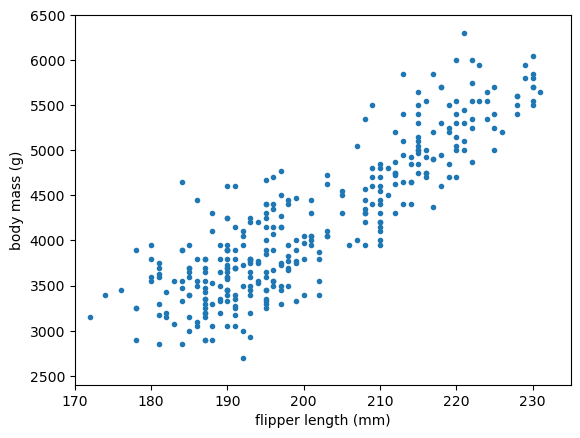
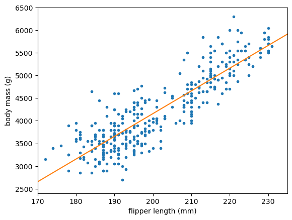

Linear Regression with scikit-learn#
This chapter teaches linear regression using scikit-learn with a dataset from
Deep Learning from HEP.
Download the dataset from here
and place it in a data/ folder.
The dataset contains the basic measurements on 3 species of penguins!
 

Objectives
Have fun with penguins!
Warning
Penguins can be very cute.
print(2 + 2)
4
import pandas as pd
penguins_df = pd.read_csv("data/penguins.csv")
penguins_df
| species | island | bill_length_mm | bill_depth_mm | flipper_length_mm | body_mass_g | sex | year | |
|---|---|---|---|---|---|---|---|---|
| 0 | Adelie | Torgersen | 39.1 | 18.7 | 181.0 | 3750.0 | male | 2007 |
| 1 | Adelie | Torgersen | 39.5 | 17.4 | 186.0 | 3800.0 | female | 2007 |
| 2 | Adelie | Torgersen | 40.3 | 18.0 | 195.0 | 3250.0 | female | 2007 |
| 3 | Adelie | Torgersen | NaN | NaN | NaN | NaN | NaN | 2007 |
| 4 | Adelie | Torgersen | 36.7 | 19.3 | 193.0 | 3450.0 | female | 2007 |
| ... | ... | ... | ... | ... | ... | ... | ... | ... |
| 339 | Chinstrap | Dream | 55.8 | 19.8 | 207.0 | 4000.0 | male | 2009 |
| 340 | Chinstrap | Dream | 43.5 | 18.1 | 202.0 | 3400.0 | female | 2009 |
| 341 | Chinstrap | Dream | 49.6 | 18.2 | 193.0 | 3775.0 | male | 2009 |
| 342 | Chinstrap | Dream | 50.8 | 19.0 | 210.0 | 4100.0 | male | 2009 |
| 343 | Chinstrap | Dream | 50.2 | 18.7 | 198.0 | 3775.0 | female | 2009 |
344 rows × 8 columns
For our regression problem, let’s ask, “Given a flipper length (mm), what is the penguin’s most likely body mass (g)?”
regression_features, regression_targets = penguins_df.dropna()[["flipper_length_mm", "body_mass_g"]].values.T
import matplotlib.pyplot as plt
fig, ax = plt.subplots()
def plot_regression_problem(ax, xlow=170, xhigh=235, ylow=2400, yhigh=6500):
ax.scatter(regression_features, regression_targets, marker=".")
ax.set_xlim(xlow, xhigh)
ax.set_ylim(ylow, yhigh)
ax.set_xlabel("flipper length (mm)")
ax.set_ylabel("body mass (g)")
plot_regression_problem(ax)
plt.show()

Let’s use Scikit-Learn’s LinearRegression
from sklearn.linear_model import LinearRegression
import numpy as np
best_fit = LinearRegression().fit(regression_features[:, np.newaxis], regression_targets)
fig, ax = plt.subplots()
def plot_regression_solution(ax, model, xlow=170, xhigh=235):
model_x = np.linspace(xlow, xhigh, 1000)
model_y = model(model_x)
ax.plot(model_x, model_y, color="tab:orange")
plot_regression_solution(ax, lambda x: best_fit.predict(x[:, np.newaxis]))
plot_regression_problem(ax)
plt.show()

print("slope:", best_fit.coef_[0])
print("intercept:", best_fit.intercept_)
slope: 50.15326594224113
intercept: -5872.092682842825